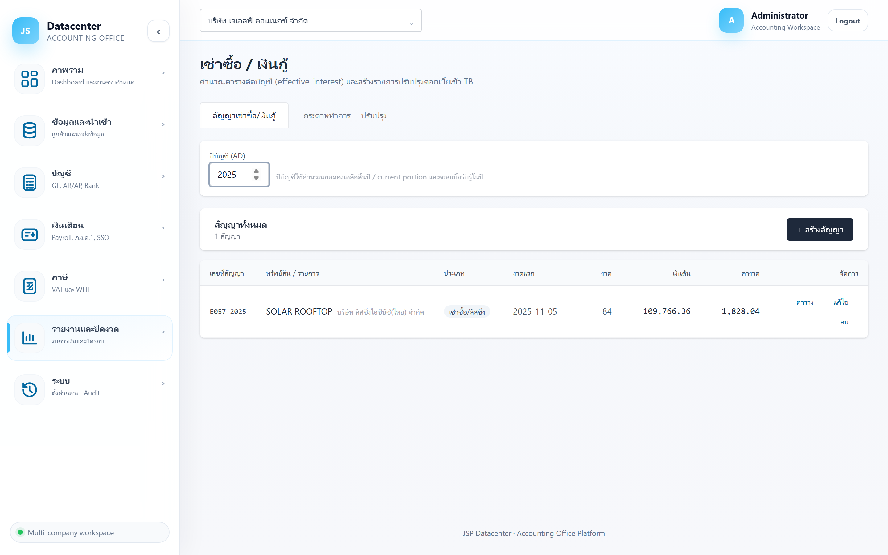
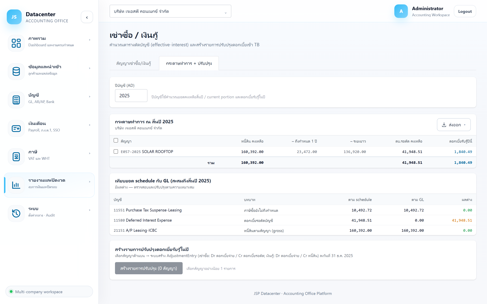

เช่าซื้อ / เงินกู้
ทะเบียนสัญญาเช่าซื้อและเงินกู้ พร้อม ตารางตัดบัญชีแบบอัตราดอกเบี้ยที่แท้จริง (effective interest) แยกเงินต้น–ดอกเบี้ยรายงวด และสร้างรายการปรับปรุงดอกเบี้ยรับรู้เข้างบให้อัตโนมัติ
สัญญาเช่าซื้อบันทึกใน Express เป็นหนี้สินเต็มจำนวน (รวมดอกเบี้ยรอตัด) ตอนปิดงบต้อง รับรู้ดอกเบี้ยเฉพาะส่วนของปีนั้น และ แยกหนี้ระยะสั้น/ระยะยาว — ระบบคำนวณให้ทั้งหมด
1. การเข้าใช้งาน
- เลือกบริษัทลูกค้า ที่แถบด้านบน
- เปิดเมนู รายงานและปิดงวด → เช่าซื้อ / เงินกู้
- กรอก ปีบัญชี (ค.ศ.) ที่ต้องการคำนวณ
2. แท็บ “สัญญาเช่าซื้อ/เงินกู้”

| คอลัมน์ | ความหมาย |
|---|---|
| เลขที่สัญญา | เลขที่สัญญาตามเอกสารจริง |
| ทรัพย์สิน / รายการ | สิ่งที่เช่าซื้อ หรือวัตถุประสงค์ของเงินกู้ |
| ประเภท | เช่าซื้อ หรือ เงินกู้ |
| งวดแรก | วันครบกำหนดงวดแรก — จุดเริ่มของตารางตัดบัญชี |
| งวด | จำนวนงวดทั้งหมด |
| เงินต้น | มูลหนี้ตั้งต้น |
| ค่างวด | จำนวนที่ต้องจ่ายต่องวด |
| ตาราง / แก้ไข | ปุ่มท้ายแถว · สัญญาที่ปิดแล้วจะมีป้าย (ปิด) |
ฟอร์มสัญญา
| กลุ่มข้อมูล | ช่อง |
|---|---|
| ข้อมูลสัญญา | ประเภท, รหัสทรัพย์สิน, ผู้ให้เช่า/เจ้าหนี้, วันที่สัญญา, วันครบกำหนดงวดแรก |
| เงื่อนไขการเงิน | ราคาเงินสด, เงินดาวน์, ภาษีซื้อ/งวด, จำนวนงวด/ปี, ค่างวด |
| บัญชี GL ที่ผูก | หนี้สินตามสัญญา (gross)*, ดอกเบี้ยจ่าย (P&L)*, ดอกเบี้ยเช่าซื้อรอตัดบัญชี, ภาษีซื้อยังไม่ถึงกำหนด |
ระบบใช้ ราคาเงินสด − เงินดาวน์ เป็นมูลหนี้ที่แท้จริง แล้วกระจายดอกเบี้ยรายงวดจากส่วนต่าง กับยอดรวมค่างวด — ถ้ากรอกราคาเงินสดผิด ดอกเบี้ยทุกงวดจะผิดตาม
ปุ่ม “ตาราง” (ตารางตัดบัญชี)
เปิดตารางรายงวดที่ระบบคำนวณ — แต่ละงวดแยกเป็น เงินต้น และ ดอกเบี้ย พร้อมยอดคงเหลือ ใช้ตรวจกับใบเสร็จของผู้ให้เช่าได้ทีละงวด
3. แท็บ “กระดาษทำการ + ปรับปรุง”

| ตัวเลข | ความหมาย |
|---|---|
| หนี้สิน คงเหลือ | ยอดหนี้ตามสัญญาคงเหลือ ณ สิ้นปี |
| – ถึงกำหนด 1 ปี | ส่วนที่ครบกำหนดภายใน 1 ปี → หนี้สินหมุนเวียนในงบ |
| – ระยะยาว | ส่วนที่เกิน 1 ปี → หนี้สินไม่หมุนเวียน |
| ดบ.รอตัด คงเหลือ | ดอกเบี้ยรอตัดบัญชีที่ยังไม่รับรู้ (บัญชีปรับมูลค่าหนี้สิน) |
| ดอกเบี้ยรับรู้ปีนี้ | ดอกเบี้ยที่ต้องบันทึกเป็นค่าใช้จ่ายของปีนั้น |
การแยก “ถึงกำหนด 1 ปี” กับ “ระยะยาว” คือสิ่งที่งบฐานะการเงินต้องแสดงแยกบรรทัด — ระบบคำนวณจากตารางตัดบัญชีให้แล้ว ไม่ต้องนั่งแยกเอง
เทียบยอดกับ GL
ตารางเทียบ ตาม schedule กับ ตาม GL รายบัญชีที่ผูกไว้ พร้อมคอลัมน์ ผลต่าง — ถ้าขึ้น “ไม่มีบัญชีที่ผูก” ให้ไปผูกบัญชีในฟอร์มสัญญาก่อน
สร้างรายการปรับปรุงดอกเบี้ย
- ติ๊กเลือกสัญญา ที่ต้องการรับรู้ดอกเบี้ยของปีนั้น
- กดปุ่มสร้างรายการปรับปรุง — ถ้ายังไม่เลือกจะขึ้นเตือน “เลือกสัญญาอย่างน้อย 1 รายการ”
- ตรวจใบที่สร้างได้ที่ กระดาษทำการปิดงบ (ที่มา = สัญญาเช่า / เงินกู้)
เช่นเดียวกับค่าเสื่อม — กดสร้างสองครั้งจะได้ใบปรับปรุง 2 ใบ ให้ลบใบซ้ำที่หน้ากระดาษทำการปิดงบ
4. ปัญหาที่พบบ่อย
| อาการ | สาเหตุและวิธีแก้ |
|---|---|
| ยังไม่มีสัญญาในระบบ | สัญญาเช่าซื้อไม่ได้อยู่ใน Express — ต้องบันทึกเองที่หน้านี้ครั้งแรก แล้วใช้ได้ตลอดอายุสัญญา |
| ดอกเบี้ยรวมไม่ตรงกับสัญญา | ตรวจ ราคาเงินสด / เงินดาวน์ / ค่างวด / จำนวนงวด ให้ตรงกับสัญญาจริง |
| สร้างรายการปรับปรุงไม่ได้ | ยังไม่ได้ผูกบัญชี “หนี้สินตามสัญญา” และ “ดอกเบี้ยจ่าย (P&L)” ซึ่งเป็นช่องบังคับ |
| ผลต่างกับ GL ไม่เป็นศูนย์ | อาจยังไม่ได้สร้างรายการปรับปรุงของปีนั้น หรือมีการบันทึกดอกเบี้ยไว้ใน Express อยู่แล้ว |
| สัญญาปิดแล้วยังขึ้นอยู่ | สัญญาที่ตัดครบจะมีป้าย (ปิด) ต่อท้ายและไม่ถูกนำไปคำนวณดอกเบี้ยอีก |